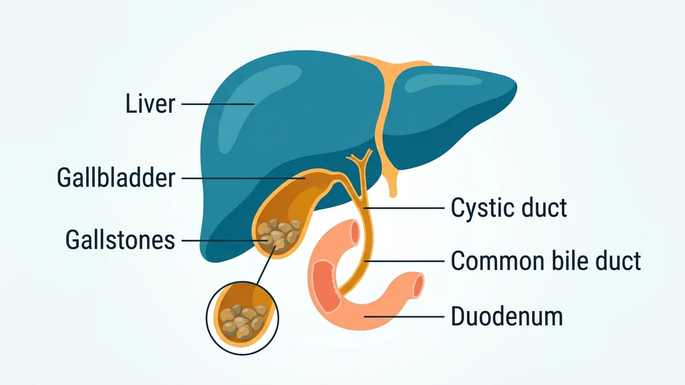
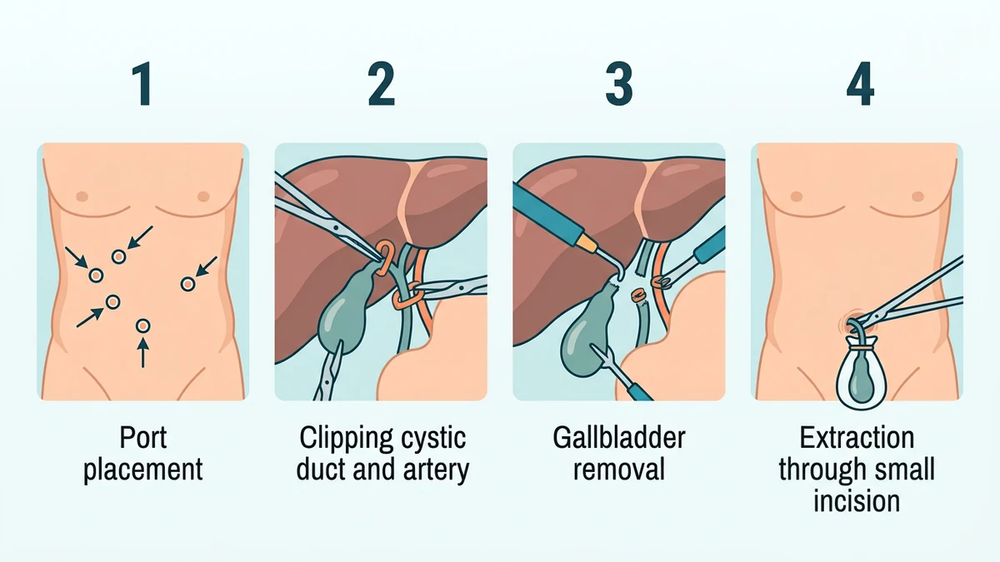

کولهسیستکتومی جراحی برداشتن کامل کیسه صفرا است و رایجترین درمان قطعی سنگهای صفراوی علامتدار و التهاب کیسه صفرا به شمار میرود. امروزه این عمل بیشتر به روش لاپاروسکوپی و از چند شکاف کوچک با بیهوشی عمومی انجام میشود و بیمار معمولاً درد کمتر و نقاهت کوتاهتری را تجربه میکند.
بیشتر بیماران وقتی نام جراحی کیسه صفرا را میشنوند، نگران زندگی بدون این عضو کوچک میشوند؛ در حالی که کیسه صفرا فقط محل ذخیرهٔ صفراست و نبود آن مانع زندگی عادی نیست. در این راهنما مسیر کامل این جراحی را از کارکرد طبیعی کیسه صفرا تا ترخیص باز میکنیم. آمادگیهای پیش از عمل در مقالهٔ آمادگی قبل از جراحی کیسه صفرا و مراقبتهای پس از آن در مراقبتهای بعد از جراحی کیسه صفرا آمده است.
کیسه صفرا اندام کوچک گلابیشکلی است که زیر کبد قرار دارد و صفرای ساختهشده در کبد را ذخیره و غلیظ میکند. وقتی غذای چرب میخورید، کیسه صفرا منقبض میشود و صفرا را از راه مجرای صفراوی به دوازدهه میفرستد تا چربیها هضم شوند. وقتی تعادل مواد سازندهٔ صفرا به هم میخورد، ذرات جامد کوچک تشکیل میشوند که کمکم به سنگ تبدیل میگردند.
بسیاری از سنگها سالها بیعلامت میمانند، اما وقتی سنگی وارد مجرای کیسه صفرا شود و راه خروج را ببندد، انقباض کیسه صفرا درد شدید و گاهی التهاب ایجاد میکند. حملات مکرر، التهاب حاد، عفونت یا انسداد مجرای مشترک صفراوی و لوزالمعده از شرایطی است که جراحی را ضروری میکند.

جراح فقط وقتی سراغ جراحی میرود که سنگها از حالت بیعلامت خارج شده باشند یا عارضه ایجاد کرده باشند. شایعترین موارد عبارتاند از:
روش استاندارد امروز، کولهسیستکتومی لاپاروسکوپی است: دوربین بلند و ابزارهای باریک از شکافهای یک سانتیمتری وارد شکم میشوند و جراح تصویر داخل شکم را روی مانیتور بزرگ میبیند. گاهی به دلیل چسبندگی از جراحیهای قبلی، التهاب شدید یا دشواری تشخیص آناتومی، تیم جراحی تصمیم میگیرد روش را به جراحی باز تغییر دهد؛ این تصمیم برای ایمنی بیمار است و نشانهٔ شکست عمل نیست. آشنایی با اصول این روش در مقالهٔ جراحی لاپاروسکوپی چیست آمده است.
| ویژگی | لاپاروسکوپی (روش رایج) | جراحی باز |
|---|---|---|
| شکاف جراحی | چند شکاف کوچک روی شکم | یک برش بزرگتر زیر دندهها |
| درد و نقاهت | درد کمتر، بازگشت زودتر به فعالیت | درد بیشتر و دوران بهبود طولانیتر |
| کاربرد رایج | بیشتر موارد سنگ و التهاب پایدار | چسبندگی شدید، التهاب پیچیده یا موارد اورژانسی |
روال معمول این عمل از شش گام پیاپی تشکیل میشود:

این جراحی با بیهوشی عمومی انجام میشود، یعنی بیمار در تمام مدت خواب عمیق دارویی است، چیزی حس نمیکند و چیزی به خاطر نمیآورد. متخصص بیهوشی پیش از القای بیهوشی داروهای آرامبخش تجویز میکند و در طول عمل تنفس و علائم حیاتی زیر نظر لحظهای کنترل میشود. جزئیات این فرایند در مقالهٔ بیهوشی عمومی چگونه است توضیح داده شده است.
بیداری در اتاق ریکاوری با خوابآلودگی، گلودرد خفیف لولهٔ تنفسی و درد مبهم شکم همراه است که با مسکن کنترل میشود. بعضی بیماران درد انتشاری به شانه را تجربه میکنند که از گاز باقیمانده در شکم است و در بخش مراقبتهای بعدی توضیح داده میشود.
بیمار در اتاق ریکاوری پایش میشود و وقتی علائم حیاتی پایدار شد، درد کنترل شد و توان نوشیدن پیدا کرد، به بخش منتقل میگردد. راه رفتن زودهنگام و آرام همان روز یا روز بعد تشویق میشود تا گاز باقیمانده جذب و حرکت روده برگردد؛ اصول آن در راه رفتن بعد از عمل آمده است. رژیم غذایی از مایعات شروع و به غذای کمچرب میرسد.
بسیاری از موارد لاپاروسکوپی یک تا دو روز بستری دارند و بعضی مراکز موارد انتخابی را سرپایی ترخیص میکنند. برنامهٔ ترخیص، داروها، مراقبت زخم و نشانههای هشدار به صورت برگهٔ مکتوب تحویل داده میشود.
این روش لاپاروسکوپی سابقهٔ ایمنی بالایی دارد، اما مانند هر جراحی دیگری عفونت زخم، خونریزی، تجمع صفرا یا آسیب به مجرای صفراوی بهندرت ممکن است. معاینهٔ پیش از عمل، تصویربرداری و شمارش استاندارد ابزار و گاز این خطرها را تا حد امکان پایین میآورد.
⚠️ پس از ترخیص، در صورت تب بالا، زرد شدن پوست یا چشم، درد فزایندهٔ شکم با وجود مسکن، استفراغ مداوم، تورم و قرمزی محل شکافها، تنگی نفس یا تیره شدن ادرار منتظر نمانید و فوراً با جراح معالج تماس بگیرید یا با ۱۱۵ اورژانس را خبر کنید. فهرست کامل علائم در صفحهٔ علائم خطر بعد از عمل آمده است.
این عمل یعنی برداشتن کامل کیسه صفرا با جراحی و رایجترین درمان قطعی سنگهای صفراوی علامتدار و التهاب کیسه صفرا است؛ وقتی انجام میشود که سنگها باعث درد مکرر، التهاب یا عوارضی مثل انسداد مجرای صفراوی شده باشند.
بیشتر موارد امروز با روش لاپاروسکوپی و از چند شکاف کوچک با کمک دوربین انجام میشود که درد کمتر و دوران نقاهت کوتاهتری دارد. جراحی باز با یک برش بزرگتر فقط در شرایط خاص مثل چسبندگی شدید، التهاب پیچیده یا دشواری فنی انتخاب میشود.
بله. کیسه صفرا فقط صفرای ساختهشده در کبد را ذخیره و غلیظ میکند و نقشی حیاتی ندارد. پس از برداشتن آن، صفرا مستقیم و بهتدریج از کبد وارد روده میشود و بیشتر بیماران با رعایت اولیهٔ رژیم کمچرب به زندگی کاملاً عادی برمیگردند.
مدت خود عمل در روش لاپاروسکوپی معمولاً کوتاه است و بسیاری از بیماران یک تا دو روز بستری میشوند یا حتی به صورت سرپایی مرخص میگردند. مدت دقیق به شدت التهاب، روش جراحی و وضعیت عمومی بیمار بستگی دارد.
کبد همچنان صفرا تولید میکند، اما دیگر جایی برای ذخیرهٔ غلیظ آن وجود ندارد؛ صفرا از راه مجرای مشترک صفراوی مستقیم وارد دوازدهه میشود. در بعضی بیماران این جریان پیوسته در هفتههای نخست باعث مدفوع شلتر میشود که معمولاً بهتدریج تنظیم میگردد.
این جراحی رایج و ایمن است، اما مانند هر عمل دیگری عفونت، خونریزی، نشت صفرا یا آسیب به مجرای صفراوی بهندرت ممکن است رخ دهد. تجربهٔ تیم جراحی و تصویربرداری پیش از عمل این خطرها را تا حد امکان کم میکند.
دستور پزشک و پروتکل مرکز درمانی شما بر هر متن عمومی مقدم است.
این مقاله صرفاً جنبهی آموزش و اطلاعرسانی دارد و جایگزین تشخیص، مشاوره یا درمان پزشکی نیست.